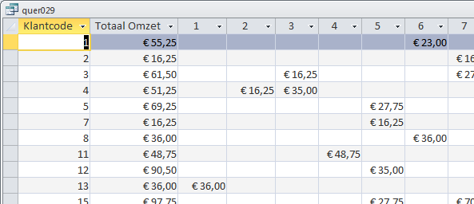

Opgave: quer029 - Kruistabel omzet per klant per maand
Maak met behulp van een kruistabelquery een overzicht van de totale omzet per klant per maand in 2010. Maak daartoe eerst een gewone query Omzet per klant per maand in 2010 en gebruik deze query als basis voor de kruistabelquery. Voor de klant mogen de klantcodes gebruikt worden en voor de maand de maandnummers. Geef ook de totale omzet per klant in 2010 in de kruistabel weer. Sla de kruistabelquery op onder de naam quer029.
Antwoord
Waarschuwing: Het verkregen antwoord kan afwijken door afhankelijkheid van eerder gemaakte opdrachten.